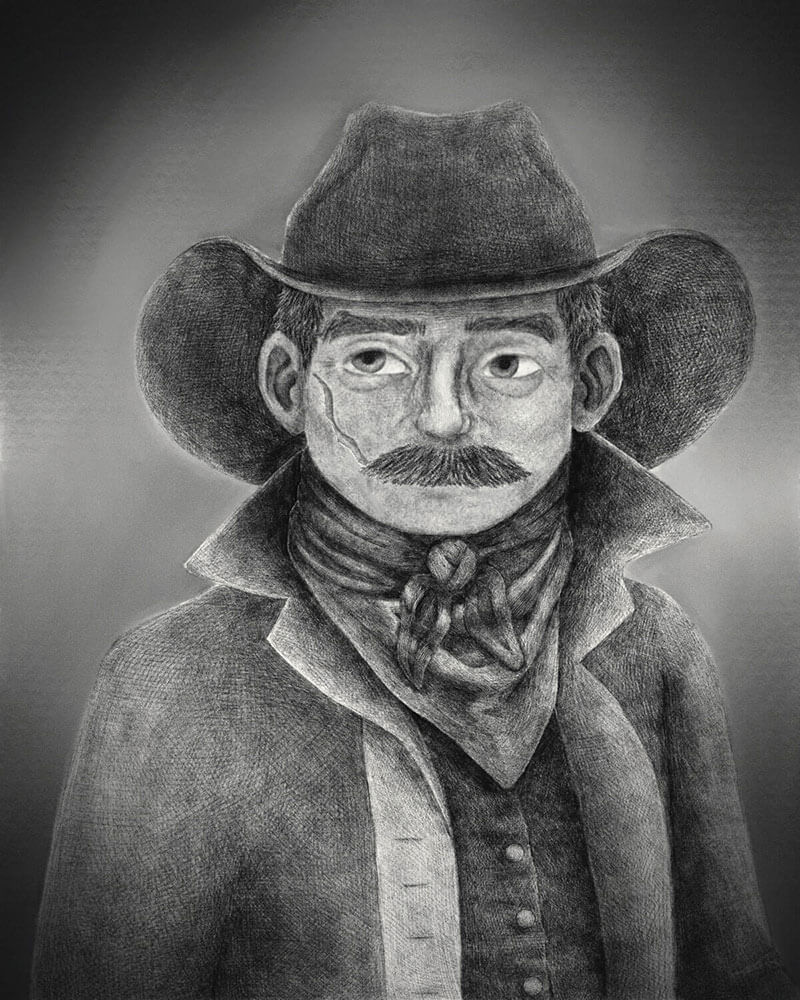

✦. ── About Me ── .✦
Hello, my name is Lily Wilber (they/them) and I am a senior in the Digital Media Arts BFA program at San Jose State University.
⫘⫘⫘⫘⫘⫘My Work⫘⫘⫘⫘⫘⫘

Gaia
This piece is a digital drawing recreating one of the relief sculptures on the Pergamon Altar.

A Perfect Pair
This piece is of my two original characters from the novel I am working on.

Sheriff Casey
This piece is meant to resemble the look of tin type portraits.

A Peak Group
This piece is one side of an arcylic keychain design I am working on.
Gaia
This piece is a digital drawing recreating one of the relief sculptures on the Pergamon Altar.
A Perfect Pair
This piece is of my two original characters from the novel I am working on.
Sheriff Casey
This piece is meant to resemble the look of tin type portraits.
A Peak Group
This piece is one side of an arcylic keychain design I am working on.
જ⁀➴ Contact Me જ⁀➴
Email: lily.wilber@sjsu.edu